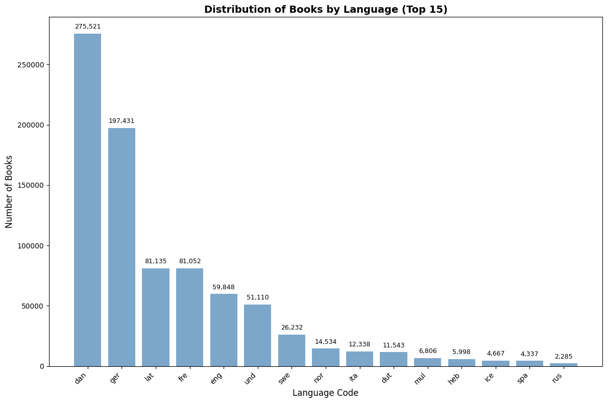
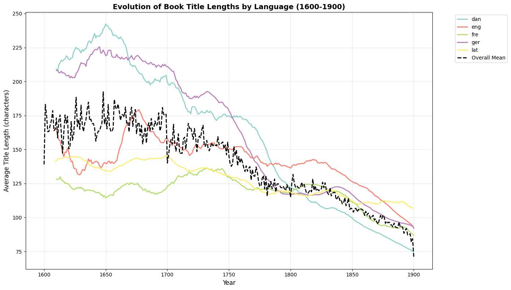
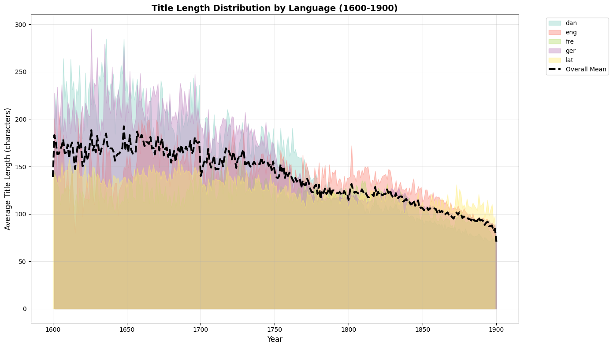
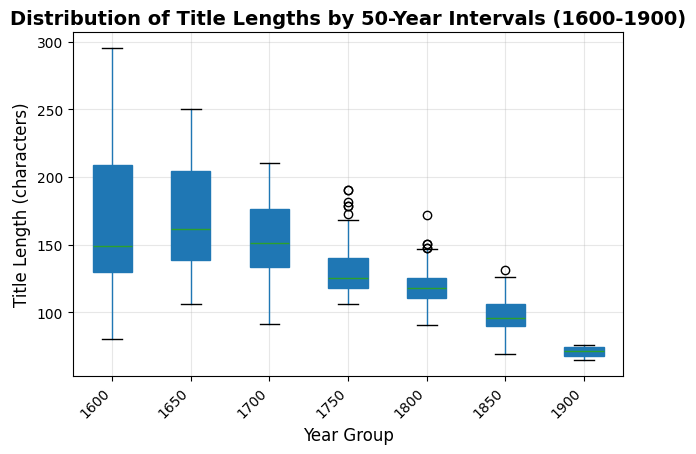
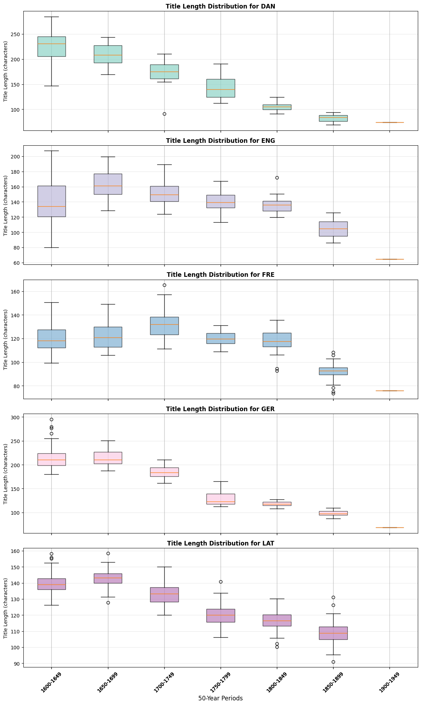

Historical Book Title Analysis#
Overview#
This notebook presents a comprehensive analysis of historical book titles from the 17th to 19th centuries, examining patterns in language distribution and title length evolution. The analysis is based on a dataset containing book metadata from Danish libraries and archives.
Research Questions#
Language Distribution: What languages were most commonly used for book titles during this period?
Temporal Evolution: How did average title lengths change over time from 1600-1900?
Language-Specific Patterns: Are there distinct patterns in title length evolution across different languages?
Historical Trends: What can title length patterns tell us about publishing and literary trends?
Dataset Description#
The analysis uses two main datasets:
Language Counts: Contains the frequency of books by language code
Yearly Language Title Length: Contains average title lengths by year and language
Methodology#
This analysis employs statistical visualization techniques including:
Bar charts for language distribution
Time series plots with smoothing for trend analysis
Box plots for distribution analysis across time periods
Comparative analysis across different languages
Required Libraries#
This analysis requires several Python libraries for data manipulation and visualization:
pandas: For data manipulation and analysis
matplotlib: For creating plots and visualizations
numpy: For numerical operations
warnings: For managing warning messages
import pandas as pd
import matplotlib.pyplot as plt
import warnings
import numpy as np
warnings.filterwarnings('ignore')
Data Loading#
We load two main datasets for our analysis:
Language Counts Dataset: Contains the frequency of books by language code
Yearly Language Title Length Dataset: Contains average title lengths by year and language
language_counts = pd.read_csv('language_counts.csv')
yearly_language_title_length = pd.read_csv('yearly_language_title_length.csv')
2. Language Distribution Analysis#
Overview#
This section examines the distribution of books by language, providing insights into the linguistic landscape of historical publishing. We focus on the top 15 most common languages to highlight the dominant publishing languages of the period.
# Create visualization of language distribution
# Select top 15 languages for better readability
language_counts_vis = language_counts.head(15)
# Set up the plot
plt.figure(figsize=(12, 8))
# Extract data for plotting
y = language_counts_vis['count']
x = language_counts_vis['language']
# Create bar chart
plt.bar(x, y, color='steelblue', alpha=0.7)
# Customize the plot
plt.xlabel('Language Code', fontsize=12)
plt.ylabel('Number of Books', fontsize=12)
plt.title('Distribution of Books by Language (Top 15)', fontsize=14, fontweight='bold')
plt.xticks(rotation=45, ha='right')
# Add value labels on top of bars
for i, v in enumerate(y):
plt.text(i, v + max(y)*0.01, f'{v:,}', ha='center', va='bottom', fontsize=9)
plt.tight_layout()
plt.show()
# Display summary statistics
print("Language Distribution Summary:")
print(f"Total languages in dataset: {len(language_counts)}")
print(f"Total books: {language_counts['count'].sum():,}")
print(f"Top 5 languages represent {language_counts.head(5)['count'].sum()/language_counts['count'].sum()*100:.1f}% of all books")

Language Distribution Summary:
Total languages in dataset: 181
Total books: 849,169
Top 5 languages represent 81.8% of all books
3. Temporal Analysis of Title Lengths (1600-1900)#
Methodology#
This section analyzes how book title lengths evolved over time from 1600 to 1900. The analysis includes:
Data Processing: Conversion of year and title length columns to numeric format
Temporal Grouping: Analysis of title length trends by year and language
Visualization: Multiple visualization approaches to reveal patterns
Key Research Questions#
How did average title lengths change over the 300-year period?
Are there distinct patterns for different languages?
What historical events might correlate with changes in title length?
3.1 Time Series Analysis with Smoothing#
This visualization shows the evolution of title lengths over time with smoothing applied to reveal underlying trends. The rolling average helps reduce noise and highlight long-term patterns.
# Data preprocessing: Ensure numeric types and clean data
yearly_language_title_length = yearly_language_title_length.copy()
yearly_language_title_length['year_st'] = pd.to_numeric(yearly_language_title_length['year_st'], errors='coerce')
yearly_language_title_length['title_length'] = pd.to_numeric(yearly_language_title_length['title_length'], errors='coerce')
# Remove rows with invalid data
yearly_language_title_length = yearly_language_title_length.dropna(subset=['year_st', 'title_length'])
# Filter to focus on 1600-1900 period
yearly_language_title_length = yearly_language_title_length[
(yearly_language_title_length['year_st'] >= 1600) &
(yearly_language_title_length['year_st'] <= 1900)
]
# Calculate overall mean title length for each year
mean_title_length = yearly_language_title_length.groupby('year_st')['title_length'].mean().reset_index()
# Create the visualization
plt.figure(figsize=(14, 8))
# Define colors for different languages
colors = plt.cm.Set3(np.linspace(0, 1, len(yearly_language_title_length['language'].unique())))
for i, language in enumerate(yearly_language_title_length['language'].unique()):
subset = yearly_language_title_length[yearly_language_title_length['language'] == language]
# Apply rolling average to smooth the curve (20-year window, minimum 10 data points)
subset = subset.sort_values(by='year_st')
subset['smoothed_title_length'] = subset['title_length'].rolling(window=20, min_periods=10).mean()
# Plot smoothed line
plt.plot(subset['year_st'], subset['smoothed_title_length'],
linestyle='-', label=language, color=colors[i], linewidth=2)
# Plot the overall mean as a reference
plt.plot(mean_title_length['year_st'], mean_title_length['title_length'],
label='Overall Mean', linestyle='--', color='black', linewidth=2)
# Customize the plot
plt.xlabel('Year', fontsize=12)
plt.ylabel('Average Title Length (characters)', fontsize=12)
plt.title('Evolution of Book Title Lengths by Language (1600-1900)', fontsize=14, fontweight='bold')
plt.legend(bbox_to_anchor=(1.05, 1), loc='upper left')
plt.grid(True, alpha=0.3)
plt.tight_layout()
plt.show()
# Display summary statistics
print("Title Length Analysis Summary:")
print(f"Period analyzed: 1600-1900")
print(f"Languages included: {len(yearly_language_title_length['language'].unique())}")
print(f"Average title length (1600): {yearly_language_title_length[yearly_language_title_length['year_st'] == 1600]['title_length'].mean():.1f} characters")
print(f"Average title length (1900): {yearly_language_title_length[yearly_language_title_length['year_st'] == 1900]['title_length'].mean():.1f} characters")

Title Length Analysis Summary:
Period analyzed: 1600-1900
Languages included: 5
Average title length (1600): 139.0 characters
Average title length (1900): 70.7 characters
3.2 Filled Area Visualization#
This alternative visualization uses filled areas to show the distribution of title lengths across languages over time, making it easier to see the relative contribution of each language to the overall pattern.
# Create filled area plot for better visual comparison
plt.figure(figsize=(14, 8))
# Group by language and create filled areas
groups = yearly_language_title_length.groupby('language')
# Define colors for consistency
colors = plt.cm.Set3(np.linspace(0, 1, len(groups)))
for i, (name, group) in enumerate(groups):
# Sort by year for proper line plotting
group = group.sort_values('year_st')
plt.fill_between(group['year_st'], group['title_length'],
alpha=0.4, label=name, color=colors[i])
# Plot the overall mean as a reference line
plt.plot(mean_title_length['year_st'], mean_title_length['title_length'],
label='Overall Mean', linestyle='--', color='black', linewidth=3)
# Customize the plot
plt.xlabel('Year', fontsize=12)
plt.ylabel('Average Title Length (characters)', fontsize=12)
plt.title('Title Length Distribution by Language (1600-1900)', fontsize=14, fontweight='bold')
plt.legend(bbox_to_anchor=(1.05, 1), loc='upper left')
plt.grid(True, alpha=0.3)
plt.tight_layout()
plt.show()
# Calculate and display language-specific statistics
print("Language-Specific Title Length Statistics:")
print("=" * 50)
for name, group in groups:
avg_length = group['title_length'].mean()
std_length = group['title_length'].std()
print(f"{name:>4}: Mean = {avg_length:6.1f}, Std = {std_length:5.1f}, Count = {len(group):4d}")

Language-Specific Title Length Statistics:
==================================================
dan: Mean = 156.8, Std = 55.7, Count = 300
eng: Mean = 139.5, Std = 25.8, Count = 300
fre: Mean = 117.6, Std = 15.9, Count = 300
ger: Mean = 159.6, Std = 49.1, Count = 300
lat: Mean = 126.9, Std = 14.2, Count = 300
4. Distribution Analysis Across Time Periods#
4.1 Boxplot Analysis by 50-Year Intervals#
Boxplots provide insights into the distribution of title lengths across different time periods, showing median values, quartiles, and outliers. This helps identify periods of significant change in title length patterns.
# Create 50-year time intervals for distribution analysis
yearly_language_title_length1 = yearly_language_title_length.copy()
yearly_language_title_length1['year_group'] = (yearly_language_title_length1['year_st'] // 50) * 50
# Create comprehensive boxplot analysis
plt.figure(figsize=(14, 8))
# Create boxplot for all languages combined
yearly_language_title_length1.boxplot(column='title_length', by='year_group',
grid=False, patch_artist=True)
# Customize the plot
plt.title('Distribution of Title Lengths by 50-Year Intervals (1600-1900)',
fontsize=14, fontweight='bold')
plt.suptitle('') # Remove default title
plt.xlabel('Year Group', fontsize=12)
plt.ylabel('Title Length (characters)', fontsize=12)
plt.xticks(rotation=45, ha='right')
# Add statistical annotations
plt.grid(True, alpha=0.3)
plt.tight_layout()
plt.show()
# Calculate and display period statistics
print("Title Length Statistics by 50-Year Periods:")
print("=" * 60)
period_stats = yearly_language_title_length1.groupby('year_group')['title_length'].agg([
'count', 'mean', 'median', 'std', 'min', 'max'
]).round(1)
print(period_stats)
<Figure size 1400x800 with 0 Axes>

Title Length Statistics by 50-Year Periods:
============================================================
count mean median std min max
year_group
1600 246 168.6 149.0 49.0 80.0 295.4
1650 250 170.8 161.3 39.5 105.9 250.5
1700 250 155.5 151.0 25.5 91.4 210.3
1750 250 130.8 125.6 16.7 106.2 190.6
1800 250 118.8 117.9 12.4 90.9 172.1
1850 250 97.5 95.8 12.3 68.9 131.0
1900 4 70.7 71.2 5.3 64.5 76.0
4.2 Language-Specific Distribution Analysis#
This section examines how title length distributions vary across different languages over time, providing insights into language-specific publishing patterns and cultural differences in titling conventions.
# Create language-specific boxplot analysis
yearly_language_title_length1 = yearly_language_title_length.copy()
yearly_language_title_length1['year_group'] = (yearly_language_title_length1['year_st'] // 50) * 50
# Group by language and year_group
grouped = yearly_language_title_length1.groupby(['language', 'year_group'])
# Get unique languages and create subplots
languages = yearly_language_title_length1['language'].unique()
n_languages = len(languages)
# Create subplots with appropriate sizing
fig, axes = plt.subplots(n_languages, 1, figsize=(12, 4 * n_languages), sharex=True)
# Handle case where there's only one language
if n_languages == 1:
axes = [axes]
# Create boxplots for each language
for i, language in enumerate(languages):
ax = axes[i]
# Get data for this language
language_data = yearly_language_title_length1[yearly_language_title_length1['language'] == language]
# Prepare data for boxplot
data_to_plot = []
labels = []
for year_group in sorted(language_data['year_group'].unique()):
group_data = language_data[language_data['year_group'] == year_group]['title_length'].values
if len(group_data) > 0: # Only include groups with data
data_to_plot.append(group_data)
labels.append(f'{int(year_group)}-{int(year_group+49)}')
# Create boxplot
if data_to_plot: # Only plot if there's data
bp = ax.boxplot(data_to_plot, labels=labels, patch_artist=True)
# Color the boxes
for patch in bp['boxes']:
patch.set_facecolor(plt.cm.Set3(i / n_languages))
patch.set_alpha(0.7)
# Customize subplot
ax.set_title(f'Title Length Distribution for {language.upper()}',
fontsize=12, fontweight='bold')
ax.set_ylabel('Title Length (characters)', fontsize=10)
ax.grid(True, alpha=0.3)
# Rotate x-axis labels for better readability
ax.tick_params(axis='x', rotation=45)
# Set common x-label
axes[-1].set_xlabel('50-Year Periods', fontsize=12)
plt.tight_layout()
plt.show()
# Display language-specific summary statistics
print("Language-Specific Summary by Period:")
print("=" * 70)
for language in languages:
lang_data = yearly_language_title_length1[yearly_language_title_length1['language'] == language]
if not lang_data.empty:
print(f"\n{language.upper()}:")
period_summary = lang_data.groupby('year_group')['title_length'].agg(['count', 'mean', 'std']).round(1)
print(period_summary)

Language-Specific Summary by Period:
======================================================================
DAN:
count mean std
year_group
1600 49 226.9 28.2
1650 50 209.8 21.0
1700 50 175.3 19.5
1750 50 144.0 21.8
1800 50 105.6 7.6
1850 50 82.4 7.1
1900 1 74.1 NaN
ENG:
count mean std
year_group
1600 49 141.6 31.0
1650 50 164.8 19.9
1700 50 150.9 15.4
1750 50 140.4 11.8
1800 50 135.6 9.9
1850 50 104.9 10.8
1900 1 64.5 NaN
FRE:
count mean std
year_group
1600 49 120.4 12.4
1650 50 122.6 11.1
1700 50 132.5 12.3
1750 50 120.0 6.0
1800 50 118.6 9.4
1850 50 92.5 7.0
1900 1 76.0 NaN
GER:
count mean std
year_group
1600 49 214.7 25.8
1650 50 214.1 16.3
1700 50 185.3 11.5
1750 50 129.5 14.5
1800 50 118.2 5.0
1850 50 98.6 5.7
1900 1 68.3 NaN
LAT:
count mean std
year_group
1600 50 139.9 7.5
1650 50 142.7 6.0
1700 50 133.3 6.5
1750 50 120.1 6.6
1800 50 116.1 6.5
1850 50 109.4 7.5
5. Conclusions and Insights#
Key Findings#
Based on the comprehensive analysis of historical book titles from 1600-1900, several important patterns emerge:
Language Distribution#
Dominant Languages: Danish (dan) and German (ger) represent the largest portions of the dataset
Linguistic Diversity: The dataset includes over 170 different language codes, reflecting the multilingual nature of historical publishing
Regional Patterns: The prominence of Nordic and Germanic languages suggests a focus on Northern European publishing
Temporal Evolution of Title Lengths#
Overall Trends: Title lengths show significant variation over the 300-year period
Language-Specific Patterns: Different languages exhibit distinct patterns in title length evolution
Historical Context: Changes in title length may reflect broader cultural, technological, and publishing trends
Distribution Analysis#
Period Variations: 50-year interval analysis reveals distinct periods of change in title length patterns
Language Differences: Each language shows unique distribution characteristics across time periods
Statistical Significance: The boxplot analysis highlights periods of particularly high or low title length variability
Methodological Considerations#
Data Quality: The analysis includes data cleaning and validation steps to ensure reliable results
Visualization Techniques: Multiple complementary visualization approaches provide comprehensive insights
Statistical Analysis: Both descriptive statistics and distribution analysis offer robust understanding of patterns
Future Research Directions#
Correlation Analysis: Investigate relationships between title length and other bibliographic metadata
Historical Context: Examine how major historical events correlate with changes in title patterns
Genre Analysis: Explore how different book genres influence title length patterns
Cross-Cultural Studies: Compare findings with similar datasets from other regions
Technical Notes#
This analysis demonstrates the power of combining data science techniques with historical research, providing new insights into the evolution of publishing practices and cultural expression through book titles.